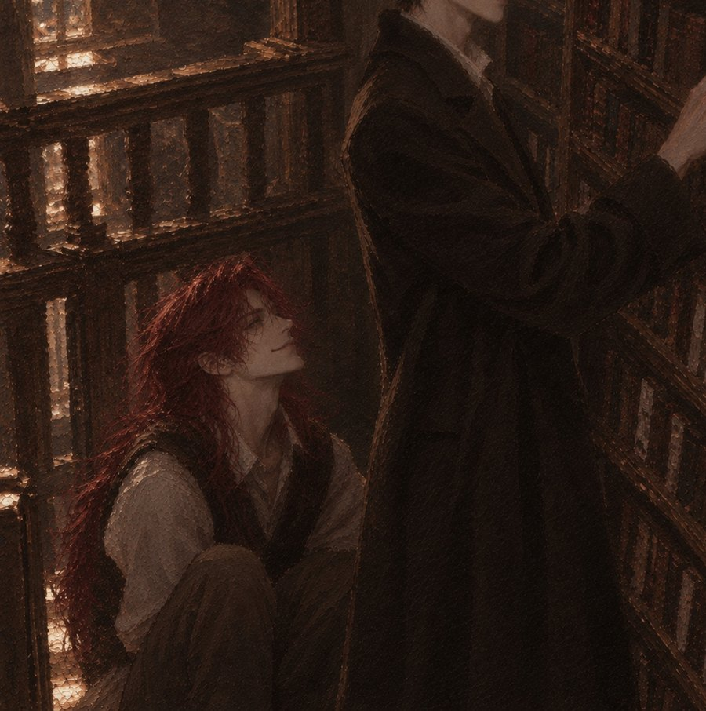

10월 둘째 주, 뉴욕. 맨해튼의 가을은 하이델베르크보다 빨리 왔고, 훨씬 시끄러웠다.
JFK 공항 입국장. 검은 머리의 남자가 캐리어 하나와 단단한 알루미늄 가방 하나를 끌고 나왔다. 알루미늄 가방 쪽을 훨씬 조심스럽게 다루고 있었다.
루카스 아스카니엔. 하이델베르크 대학 도서관 고문헌 복원실의 복원가. 찢어진 것, 젖은 것, 곰팡이 핀 것, 벌레 먹은 것. 백 년, 이백 년 된 종이를 다시 숨 쉬게 하는 것이 그의 일이었다.
그리고 지금은, 대서양을 건너온 것을 열한 시간째 후회하는 중인 사람이었다.
휴대폰이 울렸다. 화면에 '엘제 선생님'이 떠 있었다. 루카스에게 이 일을 가르친 사람, 복원실의 수석 복원가였다.
"도착했니, 루카스."
"도착했습니다. 공항이 시끄럽습니다."
"뉴욕이니까."
"습도도 엉망입니다. 이런 데서 종이를 보관한다니."
"그러니까 네가 간 거잖니. 홍수 맞은 스케치북이야. 1930년대 하이델베르크 화가 거고. 그쪽 도서관에서 독일 종이를 아는 사람을 보내 달라고 했어. 우리 복원실에서 너보다 잘 아는 사람은 없어."
"……선생님이 계시잖습니까."
"나는 비행기 열한 시간을 못 버텨. 넌 버티잖아."
"버티는 것과 좋아하는 건 다릅니다."
"그리고 루카스. 소유주가 작업을 보러 올 수도 있대."
"……안 됩니다."
"네 작업실 아니야. 남의 집이야. 손님한테 하듯이 해."
"손님은 작업대에 손을 대지 않습니다."
"그러니까 대지 말라고 정중하게 말하라는 거야. 정중하게. 알겠지?"
루카스는 대답 대신 전화를 끊었다. 엘제 선생님은 루카스가 대답하지 않는 것을 '알겠다'로 받아들이는 유일한 사람이었다.
택시 창밖으로 맨해튼이 지나갔다. 루카스는 무릎 위의 알루미늄 가방에 손을 얹었다. 그 안에 자기 붓과 주걱과 일본 종이가 들어 있었다. 이 도시에서 유일하게 믿을 수 있는 것들이었다.
"……3주."
그것이 루카스가 뉴욕에 대해 내린 첫 번째 판결이었다.
작업은 월요일부터였다. 일요일 오후, 시차 때문에 잠이 오지 않던 루카스는 호텔에서 가장 가까운 헌책방을 찾아갔다. 18마일의 책이 있다고 간판에 적힌 곳이었다.
루카스는 그 문구를 믿지 않았다. 그래서 확인하러 3층 희귀본 코너로 올라갔다. 사람이 적었다. 그래서 마음에 들었다.
오래된 독일어 책들이 꽂힌 칸 앞에 쪼그려 앉아, 책등의 실 꿰맨 자국을 하나하나 보고 있을 때였다. 계단 쪽에서 소란이 들려왔다.
"저 사람 맞지?" "진짜야, 그 사람이야!" "사인 받을 수 있을까?"
루카스는 미간을 찌푸렸다. 종이가 많은 곳에서 떠드는 사람을 그는 세상에서 두 번째로 싫어했다. 첫 번째는 종이가 많은 곳에서 뭘 먹는 사람이었다.
그때 서가 모퉁이로 누군가 빠르게 돌아 들어왔다. 키가 아주 컸다. 그리고 머리카락이, 붉었다.
불타는 것 같은 붉은 머리가 등을 지나 허리 아래까지, 아니, 무릎께까지 내려와 있었다. 루카스는 그렇게 긴 머리를 가진 남자를 처음 보았다.
남자는 서가 사이로 몸을 숨기려다가, 바닥에 쪼그려 앉아 있던 루카스를 발견하고 멈칫했다.
"아. ……죄송해요. 사람 있는 줄 몰랐어요."
"……여긴 희귀본 코너입니다. 뛰지 마세요. 바람이 일면 먼지가 종이에 앉습니다."
"네. 안 뛸게요. 대신, 저 잠깐만 여기 있어도 될까요?"
계단 쪽 소란이 가까워지고 있었다. 남자는 난처한 얼굴로 그쪽을 힐끔거렸다. 그 큰 키로 서가 뒤에 숨는다는 것 자체가 불가능해 보였다.
"숨는 겁니까?"
"……조금요."
"그 머리로요?"
"ㅎㅎ 그러게요. 그게 늘 문제예요."
루카스는 잠깐 남자를 올려다보았다. 그리고 한숨을 쉬며 일어섰다. 일어서도 시선이 남자의 턱께에 닿았다. 루카스는 그 사실이 조금 불쾌했다.
"앉으세요."
"네?"
"바닥에요. 서 있으면 다 보입니다."
남자는 잠깐 눈을 동그랗게 떴다가, 순순히 바닥에 앉았다. 긴 다리를 접느라 한참 걸렸다. 루카스는 그 앞에 서서 서가에서 책을 한 권 뽑아 들었다. 그리고 등으로 남자를 가렸다.
계단을 올라온 사람들이 두리번거렸다. "어디 갔지?" "이쪽으로 온 것 같은데."
그들의 시선이 루카스에게 닿았다. 루카스는 책에서 눈을 떼지 않은 채 말했다.
"여긴 희귀본 코너입니다. 조용히 해 주세요."
목소리는 낮았지만 이상하게 잘 들렸다. 사람들은 멈칫하더니 머쓱하게 웃고는 다시 계단을 내려갔다.
발소리가 멀어졌다. 루카스는 책을 서가에 꽂았다. 꽂기 전에 한 번, 책등을 손바닥으로 쓸었다. 뒤에서 작게 웃는 소리가 났다.

"고마워요. 진짜로요."
"고마워할 필요 없습니다. 시끄러워서 그런 겁니다."
"그래도요. 저 사람들 한 시간은 따라다녔거든요."
"뭘 하셨는데 따라다닙니까. 빚졌습니까?"
남자는 잠깐 할 말을 잃은 얼굴이 되었다. 그러다 고개를 숙이고 어깨를 떨며 웃었다. 긴 머리카락이 바닥까지 흘러내렸다.
"아뇨. 빚은 안 졌어요. ㅎㅎ"
"그럼 됐습니다."
루카스는 그 이상 묻지 않았다. 그리고 그것이, 남자에게는 이상하게 오래 남았다.
"방금 그 책, 왜 쓰다듬었어요?"
"……쓰다듬은 거 아닙니다. 책등이 들떠 있어서 눌러 준 겁니다."
"아. 아파 보였어요?"
루카스가 남자를 내려다보았다. 이상한 질문이었다. 그런데 정확한 질문이었다.
"……조금요. 아교가 말랐습니다. 백 년쯤 됐으니까."
"그런 걸 보면 알아요?"
"그게 직업입니다."
"와. 무슨 일 하세요?"
"오래된 종이를 고칩니다."
남자의 얼굴이 아주 잠깐 굳었다. 무언가를 떠올린 얼굴이었다. 그러다 다시 웃었다. 조금 전보다 조심스럽게.
"……그런 일이 있구나. 고칠 수 있는 거구나, 종이도."
"대부분은요."
"전부는 아니고요?"
"전부는 아닙니다. 그래도 대부분은 됩니다."
남자는 바닥에 앉은 채로 그 말을 곱씹는 얼굴이 되었다. 루카스는 그 표정이 무슨 뜻인지 몰랐다. 알고 싶지도 않았다. 3주 뒤면 떠날 도시였다.
루카스는 계단으로 향했다. 뒤에서 남자의 목소리가 따라왔다.
"저기요! 이름이라도요!"
"……다시 볼 일 없습니다."
루카스는 돌아보지 않았다. 그리고 다음 날 아침 아홉 시, 그 말이 틀렸다는 것을 알게 된다.
월요일 아침, 맨해튼의 한 연구 도서관 지하 2층. 복원실은 서늘하고 조용했다. 습도계가 정확히 50퍼센트를 가리키고 있었다.
루카스는 그 숫자 하나로 이 도시를 조금 용서하기로 했다.
"아스카니엔 씨죠? 민디예요, 복원실 보조고요. 와, 진짜 오셨네요. 독일에서 제일 손이 좋다고 들었어요." 민디가 말했다.
"누가 그랬습니까."
"엘제 선생님이요. 이메일로요. '말은 짧고 손은 정확하다'고."
"……선생님 이메일은 늘 짧습니다."
작업대 위에 회색 상자가 놓여 있었다. 민디가 뚜껑을 열었다. 루카스는 안을 들여다보고, 아주 잠깐 숨을 멈췄다.
가죽 표지의 스케치북이었다. 가장자리가 물에 불어 물결처럼 울어 있었다. 페이지들이 서로 들러붙어 한 덩어리가 되어 있었다. 군데군데 곰팡이가 피어 있었다. 그리고 표지 안쪽에, 번진 잉크로 이름 하나가 적혀 있었다.
'August Hartmann, Heidelberg, 1934.'
"……하르트만."
"아세요?"
"하이델베르크 화가입니다. 1936년에 미국으로 건너갔고, 그 뒤로 기록이 거의 없습니다. 우리 도서관에 드로잉이 두 장 있습니다. 둘 다 다리 그림이고."
"이것도 다리 그림이 많대요. 소유주분이 그러셨어요."
"소유주는 누굽니까."
"아, 그게…… 오늘 오신대요. 열 시에."
루카스의 얼굴이 굳었다.
"작업 첫날에 말입니까."
"첫날이라서요. 직접 맡기고 싶으시대요. 손자분이세요. 하르트만 씨 손자."
열 시 정각. 복원실 문에 노크 소리가 났다. 아주 조심스러운 노크였다.
문이 열렸다. 키가 아주 컸다. 그리고 머리카락이, 붉었다.
"……안녕하세요." 그가 말했다.
루카스는 핀셋을 든 채 굳었다. 남자도 문간에서 굳었다. 두 사람이 동시에 말했다.
"……아."
"……당신."
"어? 두 분 아세요?" 민디가 물었다.
남자가 먼저 웃음을 터뜨렸다. 손으로 입을 막았지만 소용이 없었다. 루카스는 웃지 않았다. 대신 핀셋을 작업대 위에 정확히 평행하게 내려놓았다.
"다시 볼 일 없다면서요." 그가 말했다.
"……세상이 생각보다 좁은 겁니다."
"뉴욕이 좁다는 말은 처음 들어 봐요. ㅎㅎ"
민디는 두 사람을 번갈아 보았다. 그리고 남자를 보는 눈이 점점 커졌다. 무언가를 알아본 눈이었다. 입이 벌어지려는 순간, 남자가 민디를 보며 아주 작게 고개를 저었다. 부탁하는 얼굴이었다. 민디는 입을 다물었다.
루카스는 그것을 보지 못했다. 그때 루카스는 남자의 손을 보고 있었다.
"거기서 멈추십시오."
"네?"
"손. 씻고 오셨습니까?"
"……아뇨."
"저쪽 세면대. 손목까지. 비누 두 번. 그리고 작업대 쪽으론 오지 마십시오. 저기 의자에서 보십시오."
남자는 놀란 얼굴로 루카스를 보다가, 이번에도 순순히 세면대로 갔다. 손목까지, 비누 두 번. 그리고 작업대에서 정확히 두 걸음 떨어진 의자에 앉았다. 무릎 위에 손을 얹었다. 혼날 준비를 한 아이처럼.
"……엘제 선생님이 정중하게 대하라고 하셨다던데요." 민디가 말했다.
"이게 정중한 겁니다."
루카스는 스케치북을 들어 빛에 비춰 보았다. 한참을. 표지를, 책등을, 들러붙은 페이지의 단면을. 남자는 그동안 숨도 쉬지 않는 것 같았다.
"……고칠 수 있어요?"
"아직 모릅니다."
"어제 대부분은 된다고 했잖아요."
"대부분이라고 했습니다. 이게 그 대부분에 들어가는지는 아직 모릅니다."
남자의 얼굴에서 웃음이 사라졌다. 루카스는 그 얼굴을 보았다. 어제 서점 바닥에서, '고칠 수 있는 거구나' 하던 얼굴이었다.
"……어떻게 이렇게 됐습니까."
"작년 가을 허리케인 때요. 작업실이 지하에 있었는데, 물이 들어왔어요. 하룻밤 만에 무릎까지. 다른 건 다 괜찮았어요. 그림이야 다시 그리면 되니까. 근데 이건 할아버지 거라서."
"……"
"할아버지가 독일에서 가지고 온 거 딱 하나였대요. 이거 하나. 제가 처음 그림 그린 것도 이거 보고 따라 그린 거고요."
복원실이 조용해졌다. 습도계 바늘만 아주 조금 떨렸다.
"이름이 어떻게 됩니까."
"네?"
"소유주 이름. 서류에 적어야 합니다."
남자가 이름을 말했다. 평범한 이름이었다. 민디가 옆에서 볼펜을 떨어뜨렸다. 루카스는 그 이름을 어디선가 들어 본 것 같다고 생각했지만, 그게 어디였는지는 떠올리지 못했다.
"루카스 아스카니엔입니다."
"루카스."
남자가 그 이름을 한 번 따라 불렀다. 천천히, 마치 손바닥 위에 올려 보듯이. 루카스는 이상하게 귀가 간지러웠다.
"좋은 이름이에요. 루카스."
"두 번 부를 필요는 없습니다."
"좋아서요."
"……3주 걸립니다. 최소."
"네."
"매일 오실 겁니까?"
"……와도 돼요?"
루카스는 스케치북을 상자에 다시 내려놓았다. 아주 조심스럽게. 그리고 남자를 보지 않은 채 말했다.
"손 씻고, 저 의자에서, 조용히. 그럼 됩니다."
"ㅎㅎ 네. 손 씻고, 저 의자에서, 조용히."
민디가 떨어뜨린 볼펜을 주우며 중얼거렸다. 아무도 듣지 못할 만큼 작게. '이분 진짜 모르시는구나.'
그 뒤로 그는 매일 왔다. 열 시 정각에 노크를 하고, 손목까지 비누 두 번, 그리고 작업대에서 두 걸음 떨어진 의자.
루카스는 첫 사흘 동안 그의 존재를 무시하려고 노력했다. 노력은 실패했다. 사람이 그렇게 조용할 수 있다는 게 오히려 신경 쓰였다.
루카스가 일하는 동안 그는 아무 말도 하지 않았다. 그저 보았다. 루카스가 들러붙은 종이 덩어리를 가습 텐트에 넣는 것. 습도를 1퍼센트씩 올리는 것. 대나무 주걱을 종이 사이에 밀어 넣는 것. 머리카락보다 얇게, 아주 천천히.
나흘째 되던 날 오후, 루카스가 주걱을 내려놓고 허리를 폈다. 그가 그제서야 입을 열었다.
"……물어봐도 돼요?"
"뭘요."
"아까 그거, 왜 멈췄어요? 거의 다 떨어졌는데."
"종이가 싫다고 했습니다."
"종이가요?"
"섬유가 당기는 소리가 납니다. 아주 작게. 그 소리가 나면 멈춰야 합니다. 더 하면 찢어집니다."
"그럼 언제 다시 해요?"
"종이가 괜찮다고 할 때요. 내일. 아니면 모레."
그는 루카스를 한참 바라보았다. 그리고 아주 조용히 웃었다.
"기다려 주는 거네요."
"……그게 일입니다."
"좋은 일이에요."
루카스는 대답하지 않았다. 장갑을 벗고 손을 털었다. 손끝이 하얗게 질려 있었다. 복원실은 종이를 위해 서늘하게 맞춰져 있었고, 루카스의 손은 하루 종일 차가운 물과 차가운 종이를 만졌다.
그는 그 손을 보았다. 아무 말도 하지 않았다.
다음 날 아침, 작업대 옆 선반에 작은 꾸러미가 놓여 있었다. 손난로 열 개와 얇은 털장갑 한 켤레. 메모가 붙어 있었다. '쉬는 시간에만요. 작업할 때 말고.'
"……"
"아, 그거 아침에 오셔서 두고 가셨어요. 오늘은 오후에 오신대요." 민디가 말했다.
"복원실에 개인 물품을 두면 안 됩니다."
"그럼 버릴까요?"
"……두십시오. 오후까지만."
오후에 그가 왔을 때, 장갑은 루카스의 외투 주머니에 들어가 있었다. 손난로는 두 개가 뜯겨 있었다. 그는 그것을 보고 아무 말도 하지 않았다. 대신 의자에 앉아서, 아주 오래 웃음을 참았다.
일주일째 되던 날. 가습 텐트에서 꺼낸 스케치북의 첫 장이, 마침내 다음 장과 떨어졌다.
루카스는 숨을 멈춘 채 주걱을 빼냈다. 종이가 아무 소리도 내지 않았다. 루카스는 그제서야 숨을 쉬었다.
"……이리 오십시오."
"네?"
"두 걸음. 이쪽으로."
그가 일어섰다. 일주일 만에 처음으로 의자에서 작업대로 다가왔다. 루카스 옆에 섰다. 루카스는 확대경 아래 펼쳐진 페이지를 가리켰다.
연필 드로잉이었다. 물에 번져 흐릿했지만 알아볼 수 있었다. 강 위로 아치가 이어지는 돌다리. 다리 끝의 두 개의 탑. 그리고 강가에 앉아 그림을 그리는, 아주 작은 사람 하나.
"……"
"하이델베르크 옛 다리입니다. 1934년 봄. 여기 날짜가 있습니다."
"이거…… 할아버지가 그린 거 맞죠?"
"맞습니다. 그리고 여기 강가에 앉은 사람. 스케치북을 들고 있습니다. 아마 본인일 겁니다."
그가 아무 말도 하지 못했다. 대신 손을 들어 올렸다가, 종이에 닿기 직전에 멈췄다. 루카스를 보았다. 허락을 구하는 눈이었다.
"……안 됩니다. 아직은."
"네. 알아요."
그는 손을 내렸다. 그리고 확대경 너머로 그 작은 사람을 오래 보았다. 눈가가 붉어지고 있었다.
"저 이 다리 가 봤어요. 7년 전에. 할아버지 돌아가시고 나서, 할아버지 고향이 어떤 덴지 보고 싶어서요. 다리 위에서 하루 종일 그림 그렸어요."
"……"
"근데 할아버지가 여기서 똑같이 그렸던 줄은 몰랐어요. 이 장은 한 번도 못 봤거든요. 제가 어릴 때부터 이미 붙어 있었어요."
"그럼 당신이 처음 보는 겁니까."
"네. 할아버지 말고는 제가 처음이에요."
루카스는 그 옆얼굴을 보았다. 그리고 문득, 7년 전 그 다리를 떠올렸다. 루카스는 매일 아침 그 다리를 건너 도서관으로 출근했다. 7년 전에도 그랬다.
"……7년 전이면, 저 그 다리 매일 건넜습니다."
"네?"
"출근길이었습니다. 아침 여덟 시쯤."
"……그럼 지나갔을 수도 있겠네요. 제 옆을."
"붉은 머리가 다리 위에서 그림 그리고 있었으면 기억했을 겁니다."
"ㅎㅎ 그땐 지금보다 짧았어요. 허리까지밖에 안 왔어요."
"그것도 충분히 깁니다."
그가 웃었다. 눈가는 아직 붉었다. 루카스는 시선을 돌려 다음 페이지 쪽으로 주걱을 옮겼다.
"의자로 돌아가십시오. 두 걸음."
"네. 두 걸음."
그는 의자로 돌아갔다. 그런데 그날 오후, 루카스는 몇 번이나 고개를 들어 그 의자 쪽을 보았다. 그가 보이는지 확인하듯이. 그리고 그는 그때마다, 거기 있었다.
아흐레째 오후. 복원실 문이 노크도 없이 벌컥 열렸다.
"여기 있었구나! 전화를 왜 안 받아!" 다나가 말했다.
짧은 은발의 여자가 휴대폰을 귀에 댄 채 성큼성큼 들어왔다. 하이힐 소리가 복원실 바닥에 울렸다. 루카스의 손이 주걱 위에서 멈췄다.
"다나, 여기 복원실이에요—"
"알아, 알아. 근데 네가 2주째 오후마다 연락이 안 되니까 내가 직접 왔지. 휘트니에서 전화 왔어. 내년 봄 전시, 신작 몇 점이냐고. 내가 뭐라고 해야 돼? '0점'이라고?"
"나가십시오." 루카스가 말했다.
다나가 말을 멈췄다. 처음으로 루카스를 제대로 보았다. 검은 머리의 남자가, 핀셋을 든 채로, 아주 차가운 눈으로 다나를 보고 있었다.
"여긴 습도를 50퍼센트로 맞춰 둔 방입니다. 문을 그렇게 열면 바깥 공기가 들어옵니다. 그리고 지금 제 손 밑에 있는 종이는 90년 된 겁니다. 나가서 문을 천천히 닫아 주십시오. 통화는 복도에서."
"……"
다나는 입을 벌렸다가, 닫았다. 그리고 정말로 뒷걸음질로 나가 문을 아주 천천히 닫았다. 복도에서 웃음 섞인 비명 같은 것이 들렸다.
"……미안해요. 다나가 원래 좀 그래요." 그가 말했다.
"누굽니까."
"제 갤러리스트예요. 매니저고, 가끔 엄마고."
"갤러리스트요?"
루카스가 주걱을 내려놓았다. 그를 보았다. 그는 시선을 피했다. 민디가 작업대 반대편에서 아주 작게 헛기침을 했다.
"……민디 씨."
"네?!" 민디가 말했다.
"이 사람 누굽니까."
"저, 저는 모르는…… 아니, 그게…… 그러니까……"
"괜찮아요, 민디. 제가 말할게요."
그는 의자에서 일어나지 않은 채 무릎 위에서 손깍지를 꼈다. 서점에서 혼날 준비를 하던 그 얼굴이었다.
"저 그림 그려요."
"소유주가 화가 손자라는 건 압니다."
"아뇨, 저도요. 저도 그림 그려요. 그게 좀…… 알려졌어요. 많이."
"……많이요. 진짜 많이요. 작년 휘트니 회고전 저 세 번 갔어요. 그 붉은 연작 앞에서 한 시간을 서 있었어요."
민디가 결국 참지 못하고 말해 버렸다. 그리고 두 손으로 입을 막았다. 루카스는 그를 보았다. 오래.
"……서점에서 쫓아오던 사람들."
"네."
"빚진 거 아니었군요."
"ㅎㅎ 네. 빚진 거 아니에요."
"왜 말 안 했습니까."
"루카스가 처음에 아무것도 안 물어봤잖아요. 빚졌냐고만 물어보고. 그리고 여기선, 손 씻으라고만 하고."
"……"
"좋았어요. 그냥 할아버지 스케치북 맡긴 손자로 있는 거. 아무도 저한테 다음 작품 언제 나오냐고 안 묻는 데가 여기 하나였어요."
문이 다시 열렸다. 이번엔 아주, 아주 천천히. 다나가 고개만 들이밀었다.
"……들어가도 돼요? 천천히 걸을게요."
"손 씻으십시오." 루카스가 말했다.
"네."
다나는 세면대에서 손목까지 비누 두 번을 마치고, 그의 옆 의자에 앉았다. 작업대에서 두 걸음. 그리고 루카스를 보며 작게 속삭였다.
"……이 사람 1년 동안 붓을 한 번도 안 잡았어요. 허리케인 이후로."
"다나." 그가 말했다.
"말해야 돼. 이분은 알아야 돼. 네가 요즘 오후마다 어디 가는지 나도 오늘 알았어. 근데 너 요즘 스케치북 들고 다니더라. 1년 만에."
루카스는 그를 보았다. 그의 무릎 위, 의자 옆에 늘 놓여 있던 작은 스케치북. 루카스는 그게 그냥 메모장인 줄 알았다.
"……그 안에 뭐가 있습니까."
"……아직 안 돼요. 다 보여 주기엔."
"복원실 안에서 쓴 거면 저도 볼 권리가 있습니다."
"그런 권리가 어디 있어요. ㅎㅎ"
"지금 생겼습니다."
다나가 고개를 숙이고 어깨를 떨었다. 그는 스케치북을 품에 꼭 끌어안았다. 그 큰 몸으로, 아주 작은 것을 지키듯이.
"……다 그리면 보여 줄게요. 약속해요."
그날 밤, 호텔 방. 루카스는 노트북을 켜고 한참을 망설이다가 검색창에 그의 이름을 쳤다.
화면이 그림으로 가득 찼다. 붉은색. 금색. 크고, 뜨겁고, 무언가가 터지기 직전 같은 그림들. 기사 제목들이 줄줄이 따라 나왔다. '미국 현대미술의 붉은 머리', '경매 최고가 경신', '허리케인 이후 침묵, 작업실 침수 피해'.
마지막 기사에 사진이 한 장 있었다. 물이 빠진 지하 작업실. 진흙 속에서 무언가를 품에 안고 계단에 앉아 있는 붉은 머리. 그가 안고 있는 것은 가죽 표지의 스케치북이었다.
"……"
휴대폰이 울렸다. 영상통화. 요나스였다. 복원실의 막내, 루카스가 2년째 가르치고 있는 후배. 뒤로 하이델베르크 복원실의 익숙한 작업대가 보였다.
"선배님! 살아 계세요? 사흘째 보고가 없어서 엘제 선생님이 저보고 전화해 보래요."
"살아 있어. 너 그 양피지 건조 끝났어?"
"어제 끝났어요! 근데 선배님 얼굴이 왜 그래요?"
"뭐가."
"뭔가…… 뭐지. 안 피곤해 보여요. 이상해요."
"끊는다."
"잠깐만요! 노트북에 그거 뭐예요? 그림?"
루카스가 화면을 가리기도 전에 요나스가 소리를 질렀다.
"선배님!!! 그 사람 알아요?!"
"……너도 알아?"
"모르는 사람이 어딨어요! 함부르크 쿤스트할레에 걸려 있는 그 큰 거요! 작년에 복원실 단체로 갔었잖아요! 선배님이 그 앞에서 '물감을 너무 두껍게 써서 백 년 뒤엔 다 갈라진다'고 했잖아요!"
"……내가 그랬어?"
"그랬어요! 엘제 선생님이 웃다가 우셨어요! 근데 왜 그 사람을 검색하고 있어요?"
"……그 사람 스케치북 고치고 있어."
화면 너머가 조용해졌다. 요나스가 입을 벌린 채 굳어 있었다.
"……뭐라고요?"
"그 사람 할아버지 거. 하르트만. 매일 복원실에 와. 두 걸음 떨어진 의자에 앉아서."
"매일요? 그 사람이요? 선배님 작업할 때요? 선배님 작업할 땐 엘제 선생님도 말 안 거시잖아요!"
"말 안 걸어. 그냥 앉아 있어."
"……선배님이 그걸 허락했다고요?"
"……"
"그리고 선배님 지금 귀 빨개요."
"안 빨개."
"빨개요. 화면으로도 보여요. 엘제 선생님한테 말해도 돼요?"
"말하면 너 다음 달까지 곰팡이 제거만 시킨다."
"……말 안 할게요."
루카스는 통화를 끊었다. 그리고 노트북 속 사진을 다시 보았다. 진흙투성이 계단에 앉아 스케치북을 안고 있는 사람.
'그림이야 다시 그리면 되니까.' 첫날 그가 했던 말이 떠올랐다. 루카스는 그 말이 거짓말이었다는 것을, 그제서야 알았다.
열흘째 아침. 그는 평소처럼 열 시에 노크를 하고, 손을 씻고, 의자에 앉았다. 스케치북은 무릎 위에 덮여 있었다.
루카스는 작업대 앞에 서서 한참 동안 주걱을 만지작거렸다. 그리고 등을 돌린 채 말했다.
"……그리고 싶으면 그리십시오."
"네?"
"그 스케치북. 1년 만에 들고 다닌다면서요. 여기서 그리고 싶으면 그리라는 겁니다."
"……뭘 그릴 줄 알고요."
"복원실에서 그릴 게 뭐가 있습니까. 종이 아니면 저겠죠."
그가 숨을 들이켰다. 루카스는 돌아보지 않았다. 귀 끝이 빨갰다.
"대신 조건이 있습니다."
"네."
"작업하는 손은 안 됩니다. 신경 쓰입니다. 쉬는 손만."
"쉬는 손이요?"
"주걱 내려놓았을 때. 장갑 벗었을 때. 그때만."
"……네. 쉬는 손만."
그날부터 복원실에 일정한 소리가 하나 생겼다. 루카스가 주걱을 내려놓으면, 2초 뒤에 연필 소리가 시작됐다. 사각, 사각. 루카스가 다시 주걱을 들면, 연필 소리가 멈췄다.
민디는 그것을 보며 생각했다. 두 사람이 무슨 춤을 추는 것 같다고. 한 사람이 멈추면 다른 사람이 움직이고, 다른 사람이 멈추면 한 사람이 움직이는.
사흘이 지나자, 루카스는 자기가 전보다 자주 주걱을 내려놓는다는 것을 깨달았다. 쉬는 손이 많아지고 있었다. 그리고 그것을 깨달은 날, 루카스는 일부러 오래 쉬었다.
장갑을 벗고 작업대 가장자리에 손을 올려놓았다. 가만히. 연필 소리가 오래 이어졌다. 끊기지 않았다.
"……루카스."
"조용히 하십시오. 쉬는 중입니다."
"ㅎㅎ 네."
창도 없는 지하 복원실이었다. 그런데 그 오후는, 이상하게 볕이 드는 것 같았다.
2주째 토요일. 복원실은 주말에 닫았다.
루카스는 하루 종일 호텔에 있을 생각이었다. 그러다 오후에 문득 지도를 열었다. 하르트만이 1936년에 미국에 처음 도착했다는 항구를 보고 싶어졌다. 스케치북 뒤쪽 어딘가에 그 항구 그림이 있을지도 몰랐다. 미리 보고 싶었다.
지하철을 탔다. 갈아탔다. 또 갈아탔다. 영어로 된 안내 방송은 절반이 지직거렸다. 루카스는 노선도를 노려보며 확신을 가지고 내렸다.
저녁 일곱 시. 루카스는 바닷가에 서 있었다. 항구가 아니었다. 놀이공원이 있었다. 거대한 관람차가 불을 켜고 돌고 있었다.
"……"
휴대폰 배터리는 4퍼센트였다. 루카스는 잠깐 망설이다가, 연락처 맨 위에 있는 이름을 눌렀다. 왜 그 이름이 맨 위에 있는지는 생각하지 않기로 했다.
"루카스? 주말에 웬일이에요?"
"……여기가 어딘지 모르겠습니다."
"네?"
"바다가 보입니다. 관람차도 있습니다. 항구를 찾고 있었는데."
"……루카스, 혹시 코니아일랜드예요?"
"그런 이름을 본 것 같기도 합니다."
전화 너머로 아주 긴 침묵이 흘렀다. 그리고 웃음이 터졌다. 숨이 넘어갈 듯한 웃음이었다.
"웃지 마십시오. 배터리 4퍼센트입니다."
"미, 미안해요. 거기 가만히 있어요. 관람차 앞에. 움직이지 마요. 한 시간 걸려요."
"혼자 돌아갈 수 있습니다."
"방금 항구 찾다가 놀이공원 간 사람이 할 말은 아니에요. 가만히 있어요. 꼭이요."
전화가 끊겼다. 배터리가 다 된 것이었다. 루카스는 관람차 앞 벤치에 앉았다. 바닷바람이 차가웠다. 외투 주머니에 손을 넣었다. 털장갑이 잡혔다.
한 시간 십 분 뒤. 산책로 끝에서 누군가 뛰어오고 있었다. 회색 후드를 뒤집어썼는데, 후드 아래로 붉은 머리카락이 무릎까지 흘러나와 있었다. 지나가던 사람들이 다 돌아보고 있었다.
"루카스! 있었네요. 다행이다."
"……뛰지 마십시오."
"여긴 희귀본 코너 아니잖아요."
"그리고 그게 변장입니까? 머리가 다 보입니다."
"후드 안에 넣으려고 했는데 안 들어갔어요."
루카스가 웃었다. 소리가 났다. 아주 작았지만, 분명하게. 그는 그 소리를 처음 들었다. 숨을 고르던 것도 잊고 루카스를 보았다.
"……방금 웃었어요?"
"안 웃었습니다."
"웃었어요. 들었어요."
"바람 소리입니다."
두 사람은 산책로 난간에 나란히 기대어 섰다. 바다 쪽은 캄캄했다. 등 뒤에서 관람차 불빛이 돌았다.
"……그 기사 봤습니다. 작업실 사진."
"……아."
"그림이야 다시 그리면 된다고 했잖습니까. 첫날."
"네."
"거짓말이었죠."
그가 한참 동안 대답하지 않았다. 바람이 붉은 머리카락을 흔들었다.
"……물이 무릎까지 찼을 때, 저 이것부터 들고 나왔어요. 할아버지 스케치북. 제 그림들은 그냥 두고요. 나와서 계단에 앉아 있는데, 이게 손에서 점점 무거워지더라고요. 물을 먹어서. 그때 생각했어요. 내가 그린 건 다 다시 그릴 수 있는데, 이건 다시 못 그리는구나. 할아버지가 그린 선은."
"……"
"그 뒤로 붓을 들면, 손이 안 움직였어요. 뭘 그려도 다 젖어 버릴 것 같아서. 다 사라질 것 같아서."
루카스는 바다를 보았다. 그리고 낮게 말했다.
"종이는 생각보다 강합니다."
"네?"
"물에 젖어도, 곰팡이가 피어도, 섬유는 대부분 남아 있습니다. 백 년이 지나도. 사라진 것처럼 보이는 것뿐입니다. 천천히 말리고, 천천히 떼어 내면, 대부분 돌아옵니다."
"……"
"그래서 대부분은 된다고 한 겁니다. 서점에서."
그가 루카스를 돌아보았다. 루카스는 여전히 바다만 보고 있었다. 그런데 외투 주머니에서 나온 루카스의 손에, 그가 준 털장갑이 끼워져 있었다.
"……그 장갑."
"바다라서 춥습니다."
"네. ㅎㅎ 네."
돌아가는 지하철에서 루카스는 잠들었다. 고개가 옆으로 기울었다. 그의 어깨에 닿았다. 그는 한 시간 동안 한 번도 움직이지 않았다. 내릴 역을 두 개 지나쳤다.
일요일 오후. 루카스는 브루클린의 오래된 공장 건물 앞에 서 있었다. 어제 지하철에서 내리기 전에 그가 말했던 것이다. '내일 작업실 와 볼래요? 이번엔 4층이에요. 물 안 들어와요.'
화물용 엘리베이터가 덜컹거리며 올라갔다. 문이 열리자 테레빈유 냄새가 났다. 아주 희미하게. 오래 쓰지 않은 냄새였다.
천장이 높았다. 창이 컸다. 강 건너 맨해튼이 한눈에 보였다. 그리고 벽마다 커다란 캔버스가 기대 세워져 있었다. 전부 하얬다. 하나도 칠해지지 않은 채로.
"……"
"이사 오고 나서 사 둔 거예요. 열두 개. 1년 동안 하나도 못 건드렸어요."
루카스는 그 하얀 캔버스들 사이를 천천히 걸었다. 복원실에서 종이를 살피듯이. 그리고 작업대 위에 놓인 물감 튜브들을 보았다. 대부분 뚜껑도 따지 않은 새것이었다.
"이 물감, 유통기한이 있습니다."
"……그래요?"
"기름이 산화됩니다. 3년쯤. 이건 1년 됐으니 아직 괜찮습니다."
"ㅎㅎ 그런 것까지 알아요?"
"백 년 뒤에 제 같은 사람이 고칠 그림이니까요. 알아야 합니다."
그가 웃음을 멈췄다. 루카스를 보았다.
"……백 년 뒤에도 남을 거라고 생각하는구나. 제가 그릴 거."
"당신 그림은 이미 함부르크에 걸려 있습니다. 물감을 너무 두껍게 써서 백 년 뒤엔 갈라질 겁니다. 그럼 누군가 고치겠죠."
"……그거 칭찬이에요?"
"사실을 말한 겁니다."
그가 소리 내어 웃었다. 작업실에 그 소리가 크게 울렸다. 1년 동안 이 방에서 처음 나는 소리 같았다.
그는 작업대 서랍에서 스케치북을 꺼냈다. 복원실 의자에서 늘 무릎에 올려 두던 그것이었다.
"약속했죠. 다 그리면 보여 준다고. 아직 다는 아닌데…… 오늘은 보여 주고 싶어요."
루카스는 스케치북을 받아 들었다. 첫 장을 넘겼다.
손이었다. 장갑을 벗고 작업대 가장자리에 올려놓은 손. 다음 장도 손이었다. 손난로를 쥔 손. 주걱을 막 내려놓은 손. 핀셋 끝을 닦는 손. 서른 장이 넘었다. 모두 쉬는 손이었다.
그리고 마지막 장. 손이 아니었다. 관람차 불빛을 등지고 난간에 기댄 옆모습. 바람에 날리는 검은 머리카락. 그리고 아주 조금, 입꼬리가 올라간 얼굴.
"……이건 쉬는 손이 아닙니다."
"어젯밤에 그렸어요. 돌아와서. 기억나는 대로."
"허락 안 했습니다."
"알아요. 그러니까 이건 복원실 밖에서 그린 거예요. '쉬는 손만'은 복원실 안 얘기였잖아요."
"……말장난입니다."
"ㅎㅎ 화가는 원래 그래요."
루카스는 그 그림을 오래 보았다. 웃는 얼굴이었다. 루카스가 한 번도 거울에서 본 적 없는 얼굴이었다.
"……제가 이렇게 웃습니까."
"네. 어제 딱 한 번요. 바람 소리라고 했던 그때요."
루카스는 스케치북을 덮었다. 그리고 그것을 그에게 돌려주지 않고, 잠깐 품에 안고 있었다. 자기도 모르게. 그가 진흙 계단에서 할아버지의 스케치북을 안고 있던 것처럼.
그는 그것을 보았다. 그리고 아무 말 없이 일어나, 하얀 캔버스 하나를 이젤 위에 올렸다.
물감 튜브 뚜껑을 땄다. 1년 만이었다. 남색이었다. 깊은 남색. 밤의 바다 같은.
붓이 캔버스에 닿았다. 손이 떨렸다. 그가 숨을 멈췄다. 루카스는 소파 끝에 앉은 채 그 등을 보고 있었다. 그리고 낮게 말했다.
"천천히 하십시오."
"……"
"섬유가 당기는 소리가 나면 멈추면 됩니다. 종이가 괜찮다고 할 때 다시 하면 됩니다."
그의 어깨에서 힘이 빠졌다. 붓이 움직였다. 한 번, 두 번. 남색이 하얀 천 위로 번져 나갔다.
그날 저녁, 해가 질 때까지 루카스는 소파에서 일어나지 않았다. 그는 한 번도 뒤를 돌아보지 않았다. 그런데 두 사람 다, 상대가 거기 있다는 것을 알고 있었다.
셋째 주. 스케치북은 한 장씩 돌아오고 있었다. 다리, 강, 성, 골목. 그리고 배. 대서양을 건너는 배의 갑판 그림. 날짜는 1936년 9월.
그 뒤로는 뉴욕이었다. 낯선 빌딩들, 부두, 비 오는 거리. 선이 점점 단단해졌다. 그런데 루카스는 한 가지가 이상했다. 마지막 몇 장이 유독 단단하게 붙어 있었다. 물 때문이 아니었다. 누군가 일부러 풀로 붙인 것이었다.
"……이건 홍수가 아닙니다."
"네?"
"누가 풀로 붙였습니다. 오래전에. 아마 하르트만 본인이."
"……할아버지가요? 왜요?"
"모릅니다. 보이고 싶지 않았거나, 지키고 싶었거나."
그가 의자에서 일어섰다. 두 걸음. 작업대 앞에 섰다. 루카스를 보았다.
"열어도 돼요? 할아버지가 닫아 둔 걸."
"그건 제가 정할 일이 아닙니다. 소유주가 정하는 겁니다."
"……"
"그런데 하나는 말할 수 있습니다. 이 풀은 동물성 아교입니다. 시간이 지나면 산성으로 변합니다. 그대로 두면 이 페이지는 이삼십 년 안에 부서집니다. 안에 뭐가 있든."
그는 한참 동안 그 붙은 페이지를 내려다보았다. 그리고 고개를 끄덕였다.
"열어 주세요. 사라지는 것보단 나아요."
사흘이 걸렸다. 루카스는 그 사흘 동안 거의 말을 하지 않았다. 그도 의자에서 스케치북을 펴지 않았다. 둘 다 숨을 죽이고 있었다.
사흘째 오후 네 시. 마지막 페이지가 떨어졌다.
여자의 얼굴이었다. 연필로, 아주 공들여 그린. 곱슬머리에 주근깨. 웃고 있었다. 그리고 그 아래, 독일어로 한 줄이 적혀 있었다.
"……할머니예요. 마거릿. 젊었을 때."
그의 목소리가 떨렸다. 루카스는 확대경 아래 그 글씨를 읽었다. 그리고 한참 동안 말이 없었다.
"뭐라고 써 있어요?"
"……"
"루카스."
"'머물러도 된다는 것을 가르쳐 준 마거릿에게.'"
복원실이 조용해졌다. 습도계 바늘도 멈춘 것 같았다.
"1937년 3월. 미국에 온 지 반년 됐을 때입니다. 아마 돌아갈 생각을 하고 있었을 겁니다. 그런데 이 사람 때문에 안 돌아간 거겠죠."
"……할아버지는 그 얘기 한 번도 안 했어요. 그냥 할머니 얘기만 하면 웃기만 하셨어요."
"그러니까 붙여 둔 겁니다. 말로 하기엔 너무 소중해서."
그가 손을 들어 올렸다. 그리고 종이에 닿기 직전에 멈췄다. 루카스를 보았다. 일주일째의 그날처럼, 허락을 구하는 눈이었다.
루카스는 잠깐 그 손을 보았다. 그리고 자기 장갑을 벗었다. 그의 손목을 잡았다. 천천히, 그의 손가락을 종이 가장자리, 여백의 맨 끝에 내려놓았다. 그림에는 닿지 않게.
"……여기까지만입니다."
그의 손가락이 90년 된 종이에 닿았다. 그는 그대로 고개를 숙였다. 붉은 머리카락이 작업대 위로 쏟아지지 않도록 루카스가 다른 손으로 그것을 붙잡아 주었다.
그가 우는 동안, 루카스는 그 손목을 놓지 않았다.
떠나기 사흘 전 저녁. 스케치북의 마지막 페이지가 건조대에서 내려왔다. 루카스는 그것을 중성지 폴더에 넣고, 새로 만든 상자에 담았다. 작업은 끝났다. 하루 일찍.
"……끝났어요? 진짜로요?" 민디가 물었다.
"끝났습니다."
"박사님 일정보다 하루 빨리 끝내신 거 처음 봤대요, 엘제 선생님이. 아까 이메일 왔어요. '무슨 일 있냐'고."
"아무 일도 없다고 전해 주십시오."
"……그럼 왜 빨리 끝내셨어요?"
루카스는 대답하지 않았다. 그는 의자에서 그 대답을 기다리는 얼굴로 앉아 있었다. 루카스는 그쪽을 보지 않은 채 장갑을 벗었다.
"……하루는 남겨 두고 싶었습니다."
"네?"
"이 도시에서 종이 말고 다른 걸 보는 하루요."
민디가 볼펜을 떨어뜨렸다. 이번에는 줍지도 않았다.
그날 밤, 그의 작업실 옥상. 강 건너 맨해튼의 불빛이 끝없이 이어져 있었다. 바람이 차가웠다. 루카스는 털장갑을 끼고 난간에 기대어 있었다.
작업실 안에는 이제 하얀 캔버스가 열한 개였다. 하나는 남색이 되어 있었다. 아직 다 마르지 않은 채로.
"……저 그림, 언제 끝납니까."
"모르겠어요. 천천히 하려고요. 섬유가 당기는 소리 날 때마다 멈추면서."
"캔버스는 종이가 아닙니다."
"ㅎㅎ 알아요. 그래도 그렇게 하고 싶어요. 누가 그렇게 하라고 했거든요."
루카스는 대답하지 않았다. 대신 불빛을 보았다. 시끄러운 도시였다. 처음에는 그것밖에 보이지 않았다.
"……시끄러운 도시입니다."
"네."
"습도는 엉망이고, 지하철은 엉뚱한 데 내려 주고, 사람들은 서점에서 떠듭니다."
"ㅎㅎ 네."
"……그런데 생각보다 나쁘지 않았습니다."
그가 루카스를 돌아보았다. 루카스는 여전히 불빛만 보고 있었다.
"루카스."
"네."
"루카라고 불러도 돼요?"
바람이 불었다. 붉은 머리카락이 루카스 쪽으로 날렸다. 루카스는 그것을 피하지 않았다.
"……아직은 안 됩니다."
"아직이요?"
"그건 오래 본 사람만 부릅니다. 엘제 선생님하고, 요나스. 둘 다 몇 년씩 걸렸습니다."
"저는 3주예요."
"3주입니다."
"ㅎㅎ 그럼 몇 년 기다리면 돼요?"
루카스가 그를 보았다. 처음으로, 옥상에 올라와서 처음으로, 똑바로.
"……그건 당신이 얼마나 자주 보느냐에 달렸습니다."
그가 아무 말도 하지 못했다. 그 말이 무슨 뜻인지 알아듣는 데 몇 초가 걸렸다. 그리고 알아들은 순간, 그의 얼굴이 천천히, 환하게 풀렸다.
"……그럼 자주 볼게요."
"하이델베르크는 멉니다."
"비행기 열한 시간이요. 저 버틸 수 있어요."
"버티는 거랑 좋아하는 건 다릅니다."
"저는 둘 다예요."
루카스는 다시 불빛 쪽으로 고개를 돌렸다. 귀 끝이 붉었다. 그는 그것을 보았다. 그리고 그 옆에, 어깨가 닿을 만큼 가까이 섰다. 루카스는 피하지 않았다.
떠나는 날 오후. 복원실. 루카스는 상자를 그에게 건넸다. 소유주에게 반납하는 서류에 그가 서명했다. 민디가 증인란에 서명했다. 민디의 손이 조금 떨렸다.
"보관은 습도 50퍼센트. 직사광선 금지. 지하 금지. 절대로."
"네. 4층에 둘게요."
"1년에 한 번씩 상태를 확인해야 합니다. 곰팡이 재발할 수 있으니까."
"누가 확인해요?"
"……복원가가요."
"어느 복원가요?"
루카스가 그를 보았다. 그는 웃고 있었다. 답을 이미 알고 있는 얼굴로.
"……이 스케치북 처음부터 끝까지 아는 복원가는 한 명뿐입니다."
"그럼 그분한테 맡길게요. 1년에 한 번. 아니, 더 자주."
"1년에 한 번이면 됩니다."
"곰팡이는 언제 생길지 모르잖아요."
민디가 고개를 숙이고 어깨를 떨었다. 루카스는 그녀를 노려보았다. 민디는 계속 어깨를 떨었다.
JFK 공항, 저녁 다섯 시. 출국장 앞. 그는 오늘은 후드를 쓰지 않았다. 붉은 머리를 하나로 묶었을 뿐이었다. 사람들이 돌아보고 있었다. 그는 신경 쓰지 않았다.
"이거요."
그가 작은 스케치북을 내밀었다. 쉬는 손 서른 장, 그리고 관람차 앞의 옆모습이 든 그것이었다.
"……당신 거잖습니까."
"루카스 손만 그려져 있어요. 루카스 거예요."
"마지막 장은 손이 아닙니다."
"그건…… 맡기는 거예요. 복원가한테. 잘 보관해 달라고."
루카스는 스케치북을 받아 들었다. 알루미늄 가방을 열었다. 붓과 주걱과 일본 종이 사이에, 그것을 넣었다. 이 도시에서 유일하게 믿을 수 있는 것들 사이에.
그리고 지갑에서 작은 카드 한 장을 꺼냈다. 하이델베르크 대학 도서관, 고문헌 복원실. 루카스의 이름과 직통 번호가 적힌 명함이었다.
"……1년에 한 번입니다. 상태 확인."
"네."
"그 전에 곰팡이가 생기면, 연락하십시오."
"곰팡이 안 생겨도 연락해도 돼요?"
"……"
"루카스."
"……하이델베르크 다리, 아침 여덟 시에 지나갑니다. 아직도."
그가 명함을 내려다보았다. 그리고 고개를 들었다. 서점 바닥에서 웃던 그 얼굴이었다.
"그럼 거기서 그림 그리고 있을게요. 이번엔 기억할 만큼 크게."
"그 머리면 안 기억할 수가 없습니다."
탑승 안내 방송이 나왔다. 루카스가 캐리어 손잡이를 잡았다. 그가 손을 내밀었다. 루카스는 그 손을 내려다보았다. 연필 자국과 남색 물감 자국이 군데군데 남은 손.
루카스는 장갑을 벗었다. 그리고 그 손을 잡았다. 맨손으로. 아주 잠깐, 놓지 않았다.
"……따뜻하네요. 오늘은."
"장갑 덕분입니다."
"ㅎㅎ 그거 제가 준 거잖아요."
"그러니까요."
손이 떨어졌다. 루카스는 돌아서서 출국장 안으로 걸어갔다. 돌아보지 않았다. 대신 보안 검색대 앞에서, 딱 한 번, 걸음을 멈췄다.
그리고 그대로 들어갔다. 귀 끝이 붉었다. 뒤에서 그것을 본 사람은 한 명뿐이었다.
12월 초, 하이델베르크. 강 위로 안개가 낮게 깔린 아침이었다.
도서관 지하, 고문헌 복원실. 루카스는 작업대 앞에서 18세기 악보를 들여다보고 있었다. 요나스가 옆 작업대에서 자꾸 이쪽을 힐끔거렸다.
"선배님. 요즘 아침에 왜 그렇게 일찍 나오세요?"
"일이 많아서."
"출근 시간은 똑같은데요. 다리 건너는 시간만 길어졌잖아요. 저 봤어요. 다리 한가운데서 매일 멈춰 서 계신 거."
"……곰팡이 제거, 다음 달까지 하고 싶어?"
"……아니요."
엘제 선생님이 커다란 소포 하나를 들고 복원실로 들어왔다. 미국 우표가 붙어 있었다.
"루카스. 너한테 왔다. 미국에서."
"……뭡니까." 루카스가 말했다.
"내가 어떻게 아니. 열어 봐."
소포 안에는 작은 캔버스가 하나 들어 있었다. 남색이었다. 밤의 강 같은. 그리고 그 위로 아치가 이어지는 돌다리. 다리 한가운데에 아주 작게, 검은 머리의 사람 하나가 서 있었다. 아침 안개 속에서.
캔버스 뒷면에 영어로 한 줄이 적혀 있었다. 루카스는 그것을 읽고, 한참 동안 아무 말도 하지 않았다.
"뭐라고 써 있니?"
"……'상태 확인 부탁드립니다. 물감을 너무 두껍게 썼을지도 몰라서요.'"
요나스가 웃음을 터뜨렸다. 엘제 선생님이 루카스의 어깨 너머로 그 그림을 보았다. 그리고 아주 천천히 웃었다.
"……그 붉은 머리구나."
"어떻게 아십니까."
"민디가 이메일을 보냈어. 길게. 아주 길게."
"……그 사람은 정말 개인정보를."
"그리고 그분, 다음 주에 온다더라. 하이델베르크 대학 도서관에 하르트만 드로잉 두 장 보러."
루카스가 고개를 들었다. 엘제 선생님은 이미 돌아서서 나가고 있었다. 문간에서 한마디를 남겼다.
"다리는 아침 여덟 시랬지? 안개 낀 날은 붉은색이 잘 보일 거다."
문이 닫혔다. 루카스는 캔버스를 내려다보았다. 다리 위의 작은 검은 머리. 그리고 그 옆, 처음에는 보이지 않았던 것이 있었다. 다리 난간 끝에 아주 작게 칠해진, 붉은 점 하나.
그 사람은 아직 다리 위에 없었다. 그런데 이미 거기 그려져 있었다.
일주일 뒤. 안개 낀 아침 여덟 시. 하이델베르크 옛 다리 한가운데에, 이젤 하나가 서 있었다. 그 앞에 붉은 머리카락이 무릎까지 내려온 사람이 서 있었다. 지나가던 사람들이 모두 돌아보았다.
검은 머리의 남자가 다리 끝에서 걸어오다가, 걸음을 멈췄다.
"……좋은 아침이에요, 루카스."
"……아침 여덟 시라고 했지, 일곱 시 반부터 서 있으라고는 안 했습니다."
"ㅎㅎ 놓칠까 봐서요."
"그 머리를 누가 놓칩니까."
루카스는 그 옆에 섰다. 어깨가 닿을 만큼 가까이. 이젤 위의 캔버스에는 아직 아무것도 그려져 있지 않았다. 남색 바탕 하나뿐.
"오늘은 뭘 그릴까요?"
"……쉬는 손은 안 됩니다. 지금 출근 중입니다."
"그럼 출근하는 사람이요."
"허락 안 했습니다."
"알아요. 그러니까 허락받을 때까지, 여기 매일 나올게요."
루카스는 대답하지 않았다. 대신 털장갑 낀 손을 외투 주머니에서 꺼내, 이젤 옆 난간 위에 가만히 올려놓았다.
쉬는 손이었다. 출근 시간 5분 전의.
붓이 움직이기 시작했다. 안개가 천천히 걷히고 있었다.